Lecture 9 — Part 3.3 Functional API, Visualizing ConvNets & Object Detection
บทนี้มีสามส่วนที่ต่อกัน ส่วนแรกคือ Functional API วิธีเขียน Keras ที่มีหลาย input หลาย output หรือแตกกิ่ง ซึ่งมีโค้ดเติมคำในข้อสอบ ส่วนที่สองคือการดูว่า CNN เรียนอะไร ด้วย feature map, filter และ Grad-CAM ส่วนที่สามคือ object detection ตั้งแต่ IoU, NMS, R-CNN จนถึง YOLO object detector คือโมเดลสอง output คือ class กับตำแหน่ง จึงต้องเขียนด้วย Functional API
| คำถาม | คำตอบสั้น | อ่านที่ |
|---|---|---|
| Functional API เขียนอย่างไร | x = Layer(...)(tensor) แล้ว Model(inputs, outputs) | ตอน 1 |
| หลาย output, auxiliary output | list ของ outputs, loss และ label · total loss ถ่วงน้ำหนัก | ตอน 2 |
| CNN เรียนอะไร | feature map, filter และ Grad-CAM heatmap | ตอน 3 |
| วัดและคัดกรอบอย่างไร | target \(5 + K\) ค่า · IoU · NMS · mAP | ตอน 4 |
| R-CNN ช้าเพราะอะไร | multi-stage · แก้ด้วย one-stage และ fully convolutional | ตอน 5 |
| YOLO ทำนายอะไรออกมา | \(S \times S \times B \times (5 + K)\) ที่ 3 scale | ตอน 6 |
| tensor | array หลายมิติที่ไหลระหว่าง layer |
| bounding box | กรอบรอบวัตถุ ระบุด้วยจุดกึ่งกลาง \((b_x, b_y)\) สูง \(b_h\) กว้าง \(b_w\) |
| \(p_c\) | objectness score ความมั่นใจว่ามีวัตถุในกรอบ |
| ground truth | กรอบและ class ที่คนกำกับไว้ถูกต้อง |
| ROI | region of interest บริเวณที่อาจมีวัตถุ |
Sequential เหมือนสายพานโรงงานเส้นเดียว ของเข้าทางหนึ่ง ออกทางหนึ่ง Functional เหมือนผังท่อน้ำ ทุกจุดต่อมีชื่อ แยกท่อ รวมท่อ หรือมีทางออกหลายทางก็ได้
Sequential API มี 1 input และ 1 output เท่านั้น Functional API ให้ ความยืดหยุ่นมากกว่า รองรับหลาย input หลาย output แตกกิ่ง และ layer ที่ใช้ร่วมกัน มีสองขั้น: สร้าง instance ของ layer แล้วเชื่อมกันเป็นคู่ โดยเรียก layer เหมือนฟังก์ชันบน tensor และ กำหนด Model โดยระบุ input และ output
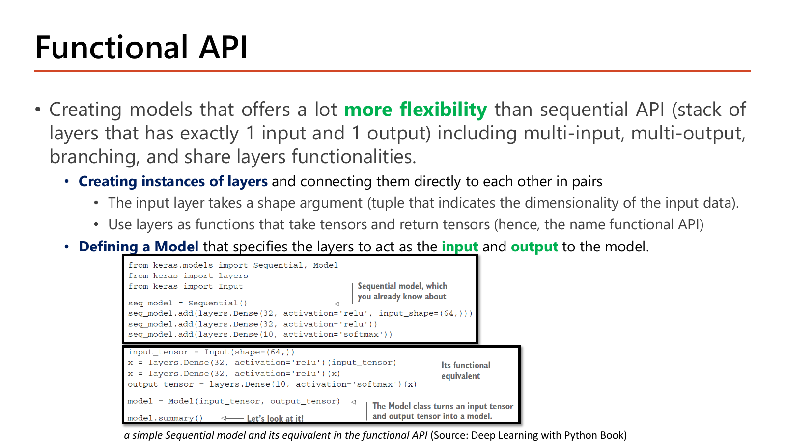
สองโมเดลบนสไลด์เหมือนกันทุกประการ ทั้งคู่มี 64·32 + 32 = 2,080, 32·32 + 32 = 1,056 และ 32·10 + 10 = 330 รวม 3,466 parameter ต่างแค่วิธีเขียน
from keras.models import Sequential, Model
from keras import layers
from keras import Input
seq_model = Sequential()
seq_model.add(layers.Dense(32, activation='relu', input_shape=(64,)))
seq_model.add(layers.Dense(32, activation='relu'))
seq_model.add(layers.Dense(10, activation='softmax'))
input_tensor = Input(shape=(64,))
x = layers.Dense(32, activation='relu')(input_tensor)
x = layers.Dense(32, activation='relu')(x)
output_tensor = layers.Dense(10, activation='softmax')(x)
model = Model(input_tensor, output_tensor)
model.summary()input_tensor = Input(shape=(64,)) | tensor ตั้งต้น vector 64 ค่าต่อตัวอย่าง ไม่รวมมิติ batch |
layers.Dense(32, ...)(input_tensor) | วงเล็บแรกสร้าง layer วงเล็บที่สองเรียก layer บน tensor ได้ tensor ใหม่ |
model = Model(input_tensor, output_tensor) | Keras ไล่ย้อนจาก output หา layer ทุกตัวระหว่างทาง |
สถาปัตยกรรมใหม่หลายตัวเป็น directed acyclic graph คือกราฟมีทิศและไม่มีวงวน ตัวอย่างจาก Lesson 8: inception module แตก 4 กิ่งแล้ว concatenate · residual block ส่ง input ข้ามไปบวก output ทั้งคู่เขียนด้วย Sequential ไม่ได้ เพราะ tensor หนึ่งตัวถูกใช้มากกว่าหนึ่งครั้ง
Sequential ไม่ได้ "เขียนโมเดลลึกไม่ได้" ข้อจำกัดคือ 1 input 1 output และไม่มีกิ่ง · ใน Dense(32)(x) วงเล็บที่สองคือ tensor ที่ป้อน ไม่ใช่ argument ของ layer
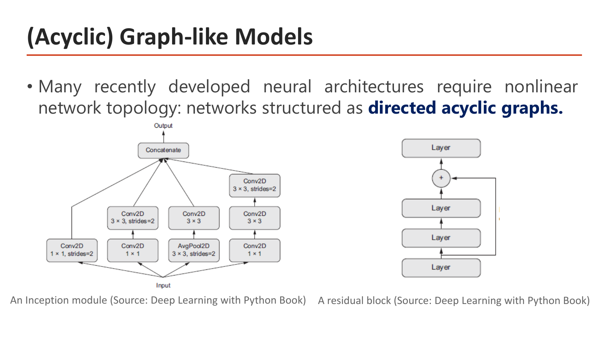
งานบางอย่างต้องการ หลาย input เช่นทำนายราคาจาก metadata ผ่าน Dense, ข้อความผ่าน RNN และรูปผ่าน ConvNet แล้วรวมกัน แม่นกว่าการทำโมเดลแยก เพราะเห็นข้อมูลทุกแหล่งพร้อมกัน
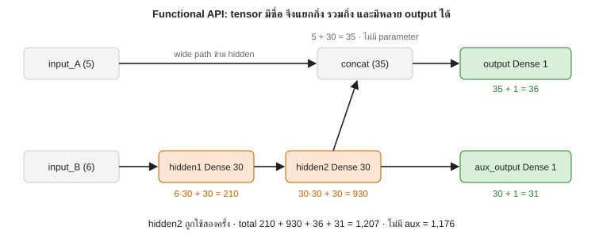
input_A วิ่งตรงไป concat คือ wide path ส่วน input_B ผ่าน hidden สองชั้นคือ deep path หลัง concat ยาว 5 + 30 = 35 ค่า กล่องขวาล่างคือ auxiliary output ของตอน 2.2
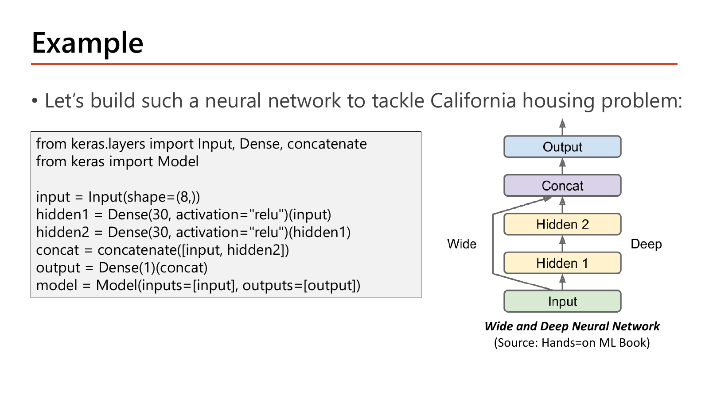
แบบ input เดียวบนสไลด์: input 8 feature เข้า deep path และ concat ตรงๆ ด้วย ได้ 8·30 + 30 = 270, 30·30 + 30 = 930 และ concat 38 ค่าเข้า Dense(1) ได้ 39 รวม 1,239
from keras.layers import Input, Dense, concatenate
from keras import Model
input = Input(shape=(8,))
hidden1 = Dense(30, activation="relu")(input)
hidden2 = Dense(30, activation="relu")(hidden1)
concat = concatenate([input, hidden2])
output = Dense(1)(concat)
model = Model(inputs=[input], outputs=[output])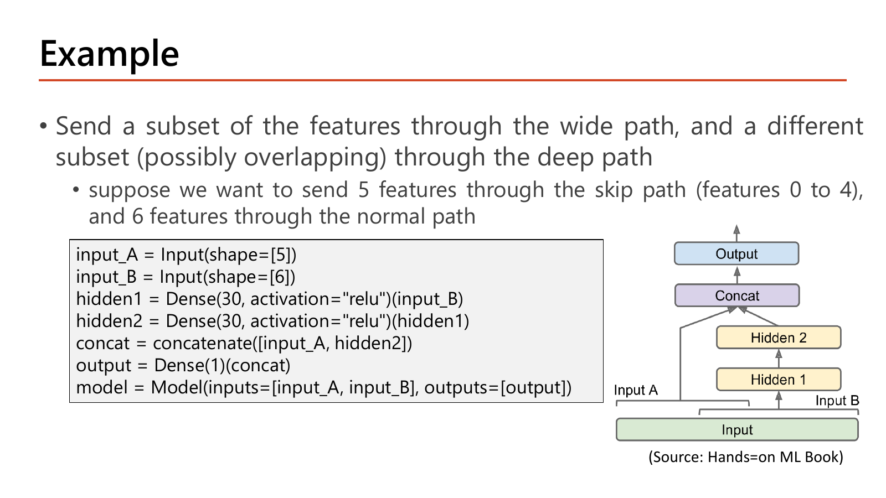
แบบสอง input ส่ง feature 0–4 ทาง wide และอีก 6 ตัวทาง deep ตอน fit ต้องส่งข้อมูลเป็น list ตามลำดับ inputs คือ model.fit([X_train_A, X_train_B], y_train)
input_A = Input(shape=[5])
input_B = Input(shape=[6])
hidden1 = Dense(30, activation="relu")(input_B)
hidden2 = Dense(30, activation="relu")(hidden1)
concat = concatenate([input_A, hidden2])
output = Dense(1)(concat)
model = Model(inputs=[input_A, input_B], outputs=[output])hidden1 = Dense(30, ...)(input_B) | เฉพาะ input_B เข้า hidden: 6·30 + 30 = 210 |
concatenate([input_A, hidden2]) | รับ list ของ tensor ต่อตามแกนสุดท้าย 5 + 30 = 35 ไม่มี parameter |
Model(inputs=[input_A, input_B], outputs=[output]) | inputs เป็น list สองตัว · total 210 + 930 + 36 = 1,176 |
concatenate รับ list ไม่ใช่สอง argument · ขนาดหลัง concat คือผลบวก ไม่ใช่ผลคูณ · tensor ที่เข้า hidden1 คือ input_B ถ้าตอบ input_A คือสลับกิ่ง
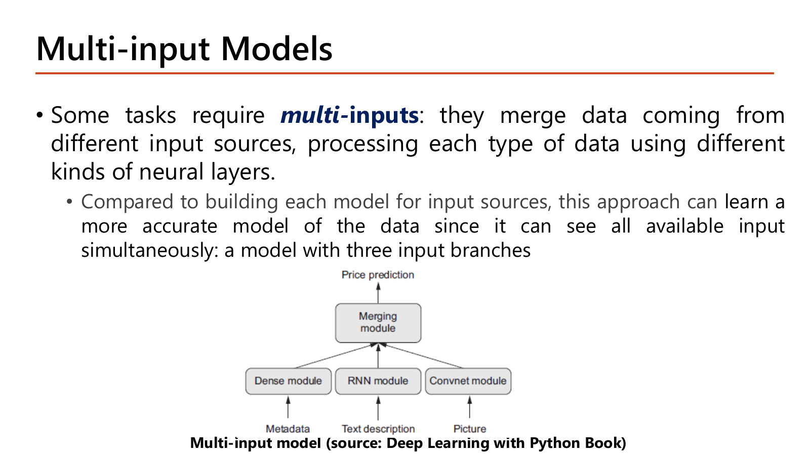
หลาย layer ใช้ร่วมกันซึ่ง output ของ layer เดียวได้ เช่นมี feature extractor สองแบบจาก input เดียว ตัวอย่างคือภาพ 64×64 pixel เข้าสอง convolution พร้อมกัน: f = 4×4, #f = 32 จับรายละเอียด และ f = 8×8, #f = 16 จับโครงกว้าง
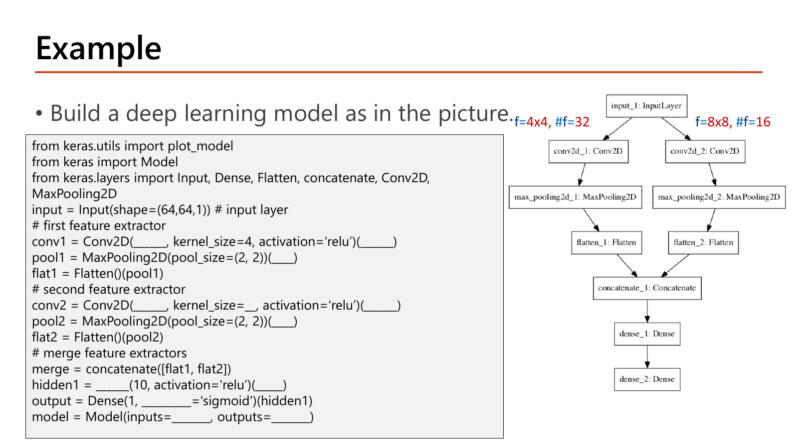
หน้า 7 คือรูปแบบข้อสอบเติมโค้ด ป้ายบนกราฟซ้ำว่า f = 4×4, #f = 32 และ f = 8×8, #f = 16 โค้ดที่เติมครบอยู่ข้างล่าง ช่องที่ต้องเติมคือ 32, input, conv1, 16, 8, input, conv2, Dense, merge, activation, input, output
from keras.utils import plot_model
from keras import Model
from keras.layers import Input, Dense, Flatten, concatenate, Conv2D, MaxPooling2D
input = Input(shape=(64,64,1)) # input layer
# first feature extractor
conv1 = Conv2D(32, kernel_size=4, activation='relu')(input)
pool1 = MaxPooling2D(pool_size=(2, 2))(conv1)
flat1 = Flatten()(pool1)
# second feature extractor
conv2 = Conv2D(16, kernel_size=8, activation='relu')(input)
pool2 = MaxPooling2D(pool_size=(2, 2))(conv2)
flat2 = Flatten()(pool2)
# merge feature extractors
merge = concatenate([flat1, flat2])
hidden1 = Dense(10, activation='relu')(merge)
output = Dense(1, activation='sigmoid')(hidden1)
model = Model(inputs=input, outputs=output)conv2 = Conv2D(16, kernel_size=8, ...)(input) | กิ่งที่สองเริ่มจาก input เดิม ไม่ใช่จาก flat1 หรือ pool1 นี่คือการ share input |
merge = concatenate([flat1, flat2]) | feature map สองกิ่งขนาดไม่เท่ากัน ต้อง flatten ก่อนจึงต่อกันได้ |
Dense(1, activation='sigmoid') | binary output |
กิ่ง 1: 64 − 4 + 1 = 61 pool ได้ 30 flatten 30·30·32 = 28,800 · parameter (4·4·1 + 1)·32 = 544 · กิ่ง 2: 64 − 8 + 1 = 57 pool ได้ 28 flatten 28·28·16 = 12,544 · parameter (8·8·1 + 1)·16 = 1,040 · merge 41,344 · Dense(10) 413,450 · Dense(1) 11 · total 415,045
64 − 5 + 1 = 60 pool ได้ 30 flatten 30·30·16 = 14,400 · merge 28,800 + 14,400 = 43,200
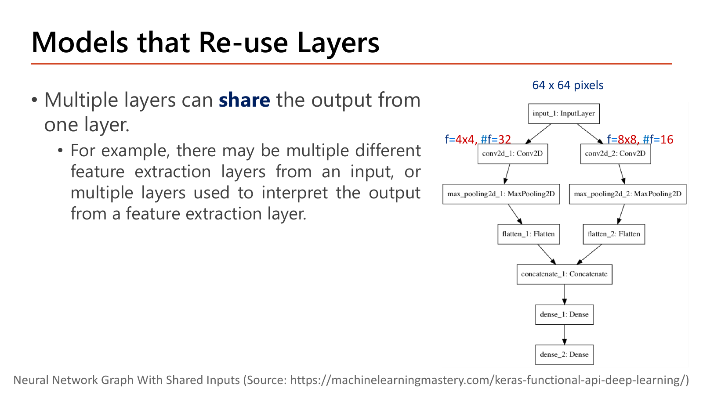
บางงานต้องทำนาย หลาย target จาก input เดียว เช่นจากข้อความนิยาย ทำนาย genre ซึ่งเป็น classification และปีที่เขียนซึ่งเป็น regression เทรนสองโมเดลแยกก็ได้ แต่ target เหล่านี้ไม่อิสระต่อกัน สิ่งที่ช่วยทาย target หนึ่งมักช่วยอีกตัว โมเดลที่เรียน shared representation ทายทั้งคู่พร้อมกันจึงดีกว่า
ครูให้นักเรียนส่งการบ้านย่อยระหว่างทาง ไม่ใช่ดูแค่ข้อสอบปลายภาค นักเรียนต้องเข้าใจเนื้อหาช่วงกลางจริง ไม่ใช่ท่องคำตอบสุดท้าย
อีกการใช้คือเป็น เทคนิค regularization: เพิ่ม auxiliary output เพื่อบังคับให้ส่วนล่างของ network เรียนสิ่งที่มีประโยชน์ด้วยตัวเอง ไม่ใช่แค่จำ training data เพื่อ main output
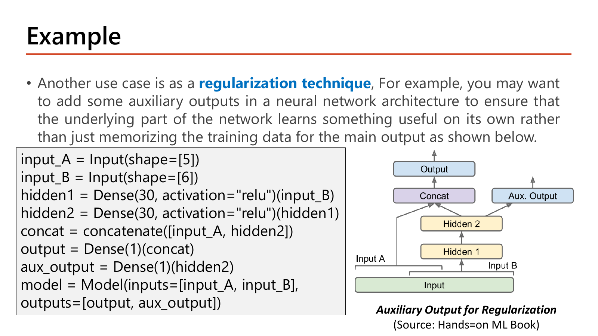
โค้ดเหมือนโมเดลสอง input เดิม เพิ่มบรรทัด aux_output = Dense(1)(hidden2) และใส่สอง output ใน list hidden2 ถูกใช้สองครั้ง aux เห็นเฉพาะ deep path 30 ค่า ได้ 31 parameter total จึงเป็น 1,176 + 31 = 1,207
input_A = Input(shape=[5])
input_B = Input(shape=[6])
hidden1 = Dense(30, activation="relu")(input_B)
hidden2 = Dense(30, activation="relu")(hidden1)
concat = concatenate([input_A, hidden2])
output = Dense(1)(concat)
aux_output = Dense(1)(hidden2)
model = Model(inputs=[input_A, input_B],
outputs=[output, aux_output])แต่ละ output ต้องมี loss ของตัวเอง ส่ง list ของ loss ตอน compile ถ้าส่ง loss เดียว Keras ใช้ loss นั้นกับทุก output ตอนเทรนต้องให้ label ทุก output ตัวอย่างนี้ main กับ aux ทายสิ่งเดียวกัน จึงใช้ label เดียวกัน
loss รวมคือผลรวมถ่วงน้ำหนักตาม loss_weights นี่คือค่าที่ optimizer ลด
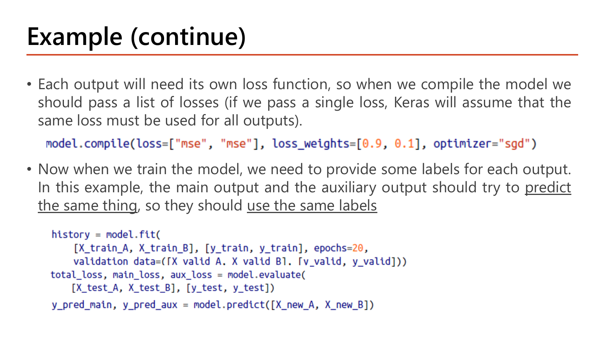
loss_weights = [0.9, 0.1] · main loss 0.40 aux loss 0.50: total = 0.9 × 0.40 + 0.1 × 0.50 = 0.36 + 0.05 = 0.41 · gradient จาก aux ไหลเข้าเฉพาะ hidden1 และ hidden2
model.compile(loss=["mse", "mse"], loss_weights=[0.9, 0.1], optimizer="sgd")
history = model.fit(
[X_train_A, X_train_B], [y_train, y_train], epochs=20,
validation_data=([X_valid_A, X_valid_B], [y_valid, y_valid]))
total_loss, main_loss, aux_loss = model.evaluate(
[X_test_A, X_test_B], [y_test, y_test])
y_pred_main, y_pred_aux = model.predict([X_new_A, X_new_B])loss=["mse", "mse"] · loss_weights=[0.9, 0.1] | loss ต่อ output ตามลำดับ [output, aux_output] · main สำคัญกว่า |
fit([X_train_A, X_train_B], [y_train, y_train]) | input list ตาม inputs · label list ตาม outputs เป็น y_train ตัวเดียวกัน |
total_loss, main_loss, aux_loss = model.evaluate(...) | คืน 3 ค่า: loss รวมถ่วงน้ำหนัก และ loss แต่ละ output |
y_pred_main, y_pred_aux = model.predict(...) | คืน 2 ชุดตามจำนวน output |
evaluate คืน 3 ค่า แต่ predict คืน 2 ค่า · aux_output ต่อจาก hidden2 ไม่ใช่จาก concat
ตัวอย่างรวมบนสไลด์ หน้า 11: ทำนายราคาบ้าน จาก 535 ตัวอย่าง input มี ตัวเลข คือห้องนอน ห้องน้ำ พื้นที่ categorical คือ zip code และ ภาพ สี่ภาพ ห้องนอน ห้องน้ำ ครัว ด้านหน้าบ้าน · output คือ ราคา · metric คือ mean percentage error โมเดลมีกิ่ง CNN สำหรับภาพ และกิ่ง Dense สำหรับตาราง แล้ว concatenate
loss เดียวถูกใช้กับทั้งสอง output · 0.5 × 0.2 + 0.5 × 0.6 = 0.4
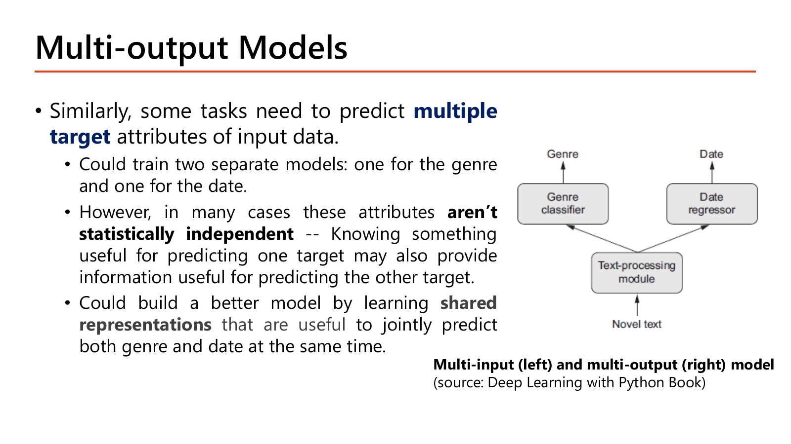
Deep learning มักถูกมองเป็น กล่องดำ แต่ไม่จริงกับ ConvNet เพราะ ConvNet เรียน แนวคิดเชิงภาพ ที่วาดออกมาดูได้ สามเทคนิค:
| เทคนิค | ตอบคำถาม |
|---|---|
| visualizing intermediate activations | ภาพถูกแปลงเป็นอะไรในแต่ละ layer |
| visualizing filters | filter แต่ละตัวตอบสนอง pattern แบบไหน |
| heatmap of class activation | บริเวณไหนของภาพทำให้โมเดลตัดสินเป็น class นั้น |
เทคนิคแรกแสดง representation ระหว่างทาง คือ feature map ขั้นตอน: สร้าง visualization model ที่รับภาพและให้ output เป็น feature map ทุก layer → โหลดภาพ → แปลงเป็น NumPy → normalize เช่นเป็น [0, 1] → ส่งภาพผ่าน visualization model
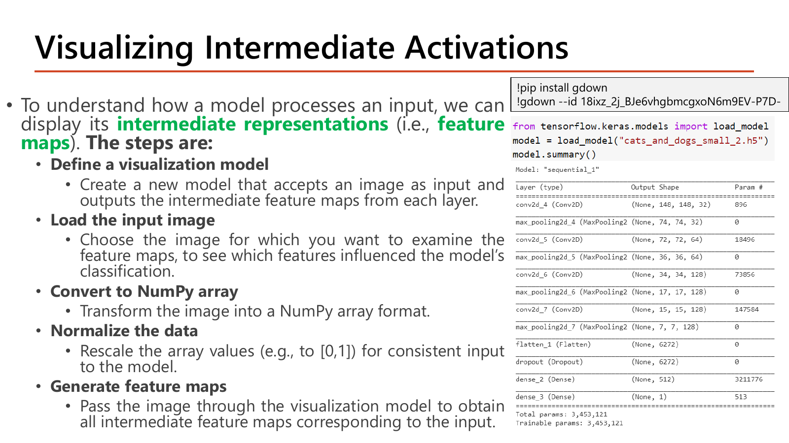
โมเดลที่โหลดคือ cats_and_dogs_small_2.h5 conv 4 ชั้น 32, 64, 128, 128 filter ขนาดตามความลึกคือ 150 → 148 → 74 → 72 → 36 → 34 → 17 → 15 → 7 feature map ที่จะวาดมีจำนวนเท่าจำนวน filter แต่ละชั้น
!pip install gdown
!gdown --id 18ixz_2j_BJe6vhgbmcgxoN6m9EV-P7D-
from tensorflow.keras.models import load_model
model = load_model("cats_and_dogs_small_2.h5")
model.summary()conv: (3·3·3 + 1)·32 = 896 · (3·3·32 + 1)·64 = 18,496 · (3·3·64 + 1)·128 = 73,856 · (3·3·128 + 1)·128 = 147,584 · flatten 7·7·128 = 6,272 · Dense 512: 3,211,776 · Dense 1: 513 · total 3,453,121 ตรงกับ summary
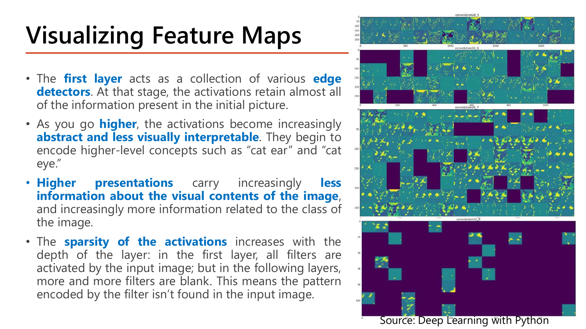
แถวบนสุดของรูปคือ layer แรก 148×148 ยังเห็นโครงแมวทุกช่อง แถวล่างสุดคือ layer ที่สี่ 15×15 เป็นช่องทึบเกือบหมด มีจุดสว่างไม่กี่จุด สี่ข้อสังเกตอ่านจากรูปนี้:
| ข้อสังเกต | ความหมาย |
|---|---|
| layer แรก คือ ตัวตรวจขอบ | activation ยังเก็บข้อมูลภาพเดิมเกือบหมด |
| ยิ่ง สูงขึ้น ยิ่ง นามธรรมและตีความด้วยตายากขึ้น | เริ่มเข้ารหัสแนวคิดเช่นหูแมว ตาแมว |
| representation ชั้นสูง มี ข้อมูลหน้าตาของภาพน้อยลง | แต่มีข้อมูลเรื่อง class มากขึ้น |
| ความว่างของ activation เพิ่มตามความลึก | ช่องว่างแปลว่า pattern ของ filter นั้นไม่พบในภาพ |
layer ลึก "เห็นหน้าตาภาพน้อยลง" ไม่ใช่มากขึ้น · ช่องว่างใน layer ลึกไม่ใช่ filter เสีย แต่คือ pattern นั้นไม่มีในภาพ
CNN ใช้ filter ที่เรียนมา ทำ convolution กับ feature map ก่อนหน้า filter คือ weight สองมิติที่ค่าติดกันมีความสัมพันธ์เชิงตำแหน่ง จึงวาดเป็นภาพได้ ขั้นตอน: วน model.layers → ถ้าเป็น conv ดึง weight กับ bias ด้วย get_weights() → normalize เป็น 0–1 → plot ทุก channel ภาพสีมี 3 channel
get_weights() ของ Conv2D คืน weight shape (f, f, n_C, n_C') และ bias shape (n_C',) · conv แรกของโมเดลตอน 3.1 คือ (3, 3, 3, 32) กับ (32,) รวม 864 + 32 = 896
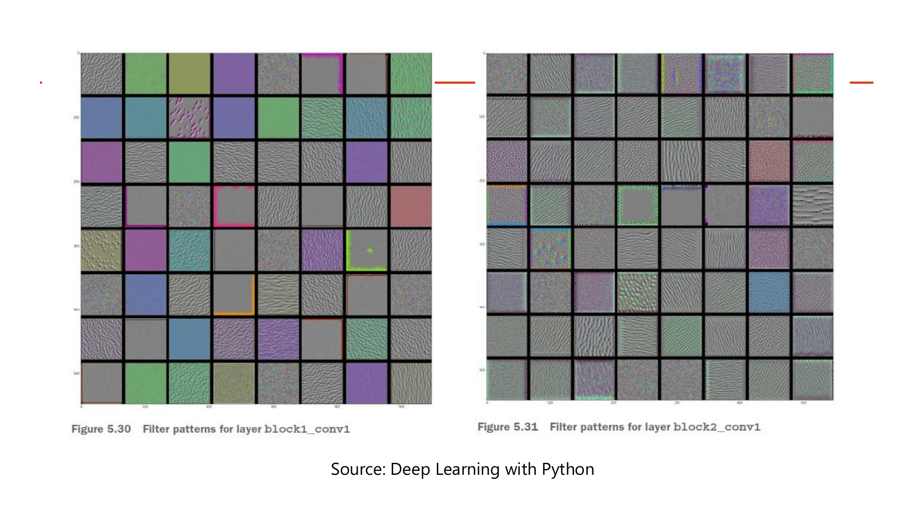
ภาพหน้า 16–17 คือ pattern ที่ทำให้ filter ของ VGG16 ตอบสนองแรงสุด block1_conv1 เป็นสีพื้นและขอบตามทิศ block2_conv1 เริ่มเป็น texture ง่ายๆ จากขอบผสมสี
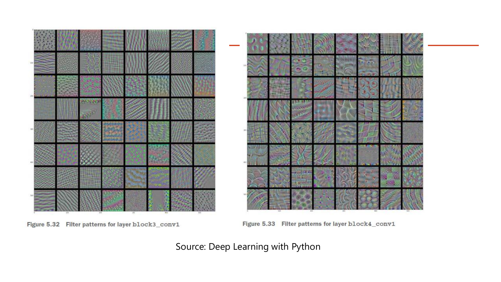
block3 และ block4 เป็น texture ซับซ้อนคล้ายของในธรรมชาติ เช่นลายจุด ลายคลื่น ขน ใบไม้ ลำดับ block1 ถึง block4 คือหลักฐานว่า layer ลึกรวม feature ง่ายเป็น feature ซับซ้อน และเป็นเหตุที่ transfer learning ยืม layer ต้นไปใช้ได้
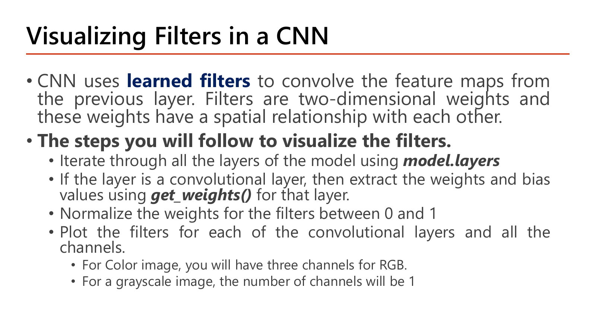
ถามโมเดลว่าทำไมทายว่าเป็นหมา แล้วให้มันระบายสีภาพตรงจุดที่ทำให้มันตัดสินใจ ถ้าระบายที่หน้าหมาแปลว่าดูถูกที่ ถ้าระบายที่พื้นหญ้าแปลว่าโกง
เทคนิคที่สามตรวจว่า บริเวณไหน ของ ภาพที่ให้มา มีผลต่อ การตัดสิน class สุดท้าย ตัวอย่างบนสไลด์ โมเดลทาย Saint Bernard heatmap สว่างตรงหน้าสุนัข ไม่ใช่พื้นหรือชามข้างหลัง
Grad-CAM อยู่ในกลุ่ม class activation map: สร้าง heatmap 2 มิติบอกว่าแต่ละตำแหน่งสำคัญต่อ class หนึ่งแค่ไหน ใช้หาตำแหน่งวัตถุได้ด้วย และเป็นเทคนิค post-training ใช้หลังเทรนเสร็จ parameter คงที่ ภาพที่มีทั้งหมาและแมว heatmap 'Cat' สว่างที่แมว heatmap 'Dog' สว่างที่หมา heatmap ขึ้นกับ class ที่ถาม
| ขั้น | ทำอะไร |
|---|---|
| 1 | เอา feature map output ของ conv layer ชั้นสุดท้าย เพราะเป็นจุดสมดุลระหว่างความหมายระดับสูงกับตำแหน่ง |
| 2 | สร้าง โมเดล ที่รับ activation ของ conv ชั้นสุดท้าย เป็น input แล้วทาย class |
| 3 | คำนวณ gradient ของ class ที่ทายสูงสุดเทียบ activation นั้น \(\partial y^c / \partial A^k\) |
| 4 | ถ่วงน้ำหนัก feature map แต่ละ channel ด้วย ค่า alpha คือค่าเฉลี่ยของ gradient ทั้งแผ่น |
| 5 | รวมแล้วผ่าน ReLU ได้ heatmap |
alpha ของ channel k คือ gradient เฉลี่ยทั้งแผ่น Z คือจำนวนช่อง heatmap คือผลรวมของทุก channel คูณ alpha แล้วตัดค่าลบทิ้ง
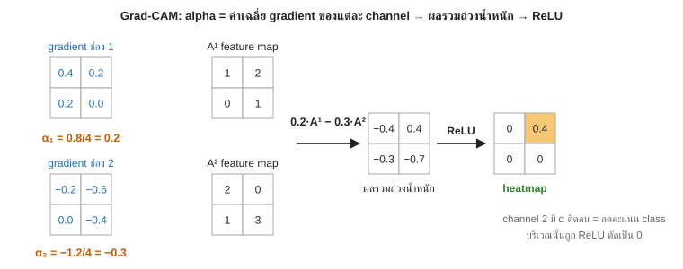
channel 1 มี gradient เฉลี่ย 0.2 ช่วยเพิ่มคะแนน channel 2 เฉลี่ย −0.3 ลดคะแนน ผลรวมถ่วงน้ำหนักบวกแค่มุมขวาบน ReLU ตัดที่เหลือเป็น 0 heatmap สว่างช่องเดียว
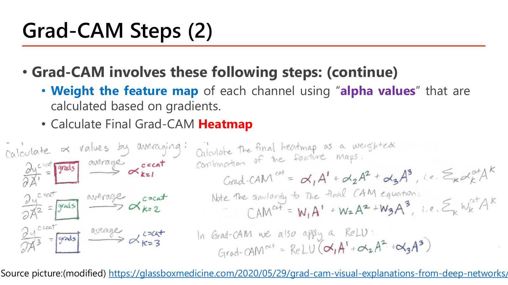
สูตรนี้คล้าย CAM เดิม \(\text{CAM} = \sum_k w_k A^k\) ต่างตรง Grad-CAM ได้น้ำหนักจาก gradient และมี ReLU feature map ส่วนใหญ่เล็กกว่าภาพ ต้อง up-sample heatmap ให้เท่าภาพก่อนซ้อน
# Generate class activation heatmap
heatmap = make_gradcam_heatmap(img_array, model, last_conv_layer_name)last_conv_layer_name | ชื่อ conv ชั้นสุดท้าย เช่น "block5_conv3" ของ VGG16 · heatmap ได้ขนาดเท่า feature map ของ layer นี้ VGG16 คือ 14×14 |
alpha คือค่าเฉลี่ยของ gradient ไม่ใช่ค่าสูงสุด · ใช้ conv ชั้นสุดท้าย ไม่ใช่ Dense ชั้นสุดท้าย เพราะ Dense ไม่มีตำแหน่งแล้ว · Grad-CAM ไม่เทรนอะไรเพิ่ม
(0.6 + 0.2 + 0.0 − 0.4)/4 = 0.4/4 = 0.1
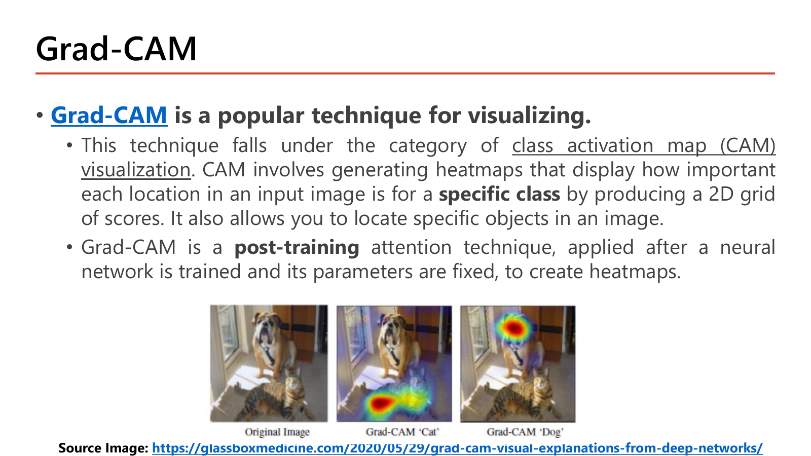
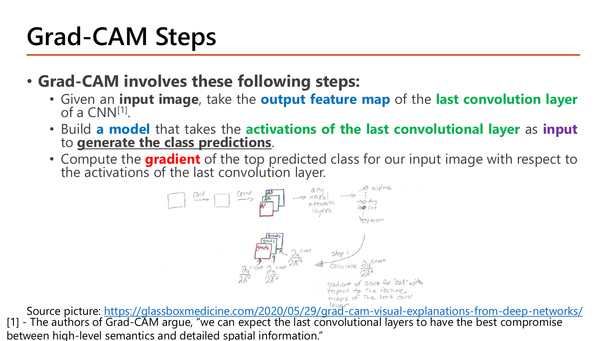
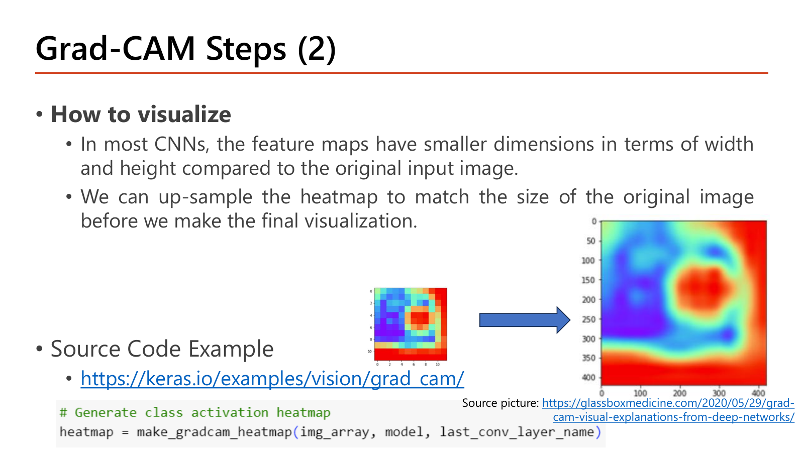
| งาน | output |
|---|---|
| classification | label เดียวทั้งภาพ |
| object detection | กรอบ + class ต่อวัตถุ |
| semantic segmentation | class ต่อ pixel ไม่แยกวัตถุ class เดียวกัน |
| instance segmentation | class ต่อ pixel และแยกวัตถุแต่ละชิ้น |
ใน เทคโนโลยีรถขับเอง การวางเส้นทางต้อง ระบุ รถ คนเดินถนน ถนน และ สิ่งกีดขวาง สไลด์ตั้งโจทย์ งานรถขับเอง สมมติ 80 class ซึ่งเป็น K ของ YOLO ตอน 6
Object detection คือ หาตำแหน่ง วัตถุหนึ่งชิ้นหรือมากกว่า และ จำแนก แต่ละชิ้น localization ทาย \((b_x, b_y, b_w, b_h)\) classification ทาย class
ค่าแรกบอกว่ามีวัตถุไหม สี่ค่าถัดไปคือกรอบ ที่เหลือคือ one-hot ของ class
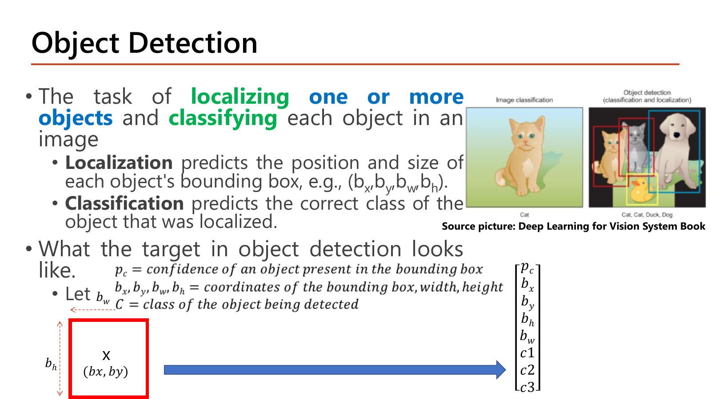
3 class วัตถุ class 2 อยู่กลางภาพ ขนาดครึ่งภาพทั้งสองด้าน: y = [1, 0.5, 0.5, 0.5, 0.5, 0, 1, 0] · ไม่มีวัตถุ: p_c = 0 และอีก 7 ค่าไม่นำมาคิด loss
ความท้าทาย: ต้องทำ localization ควบคู่ classification · วัตถุ ไม่ได้ครอบพอดี · ภาพมี หลายวัตถุ และบางที ซ้อนกัน · ต้องการ ความเร็ว โดยเฉพาะ รถขับเอง ที่ต้อง ประมวลผลแบบ real-time
semantic segmentation ไม่แยกวัตถุ class เดียวกัน instance segmentation แยก · target ยาว 5 + K ไม่ใช่ 4 + K เพราะมี p_c
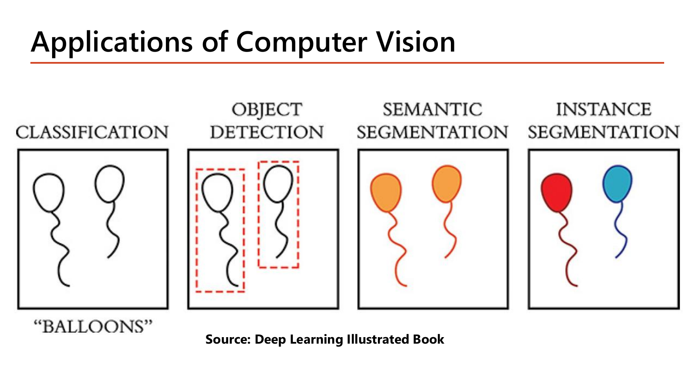
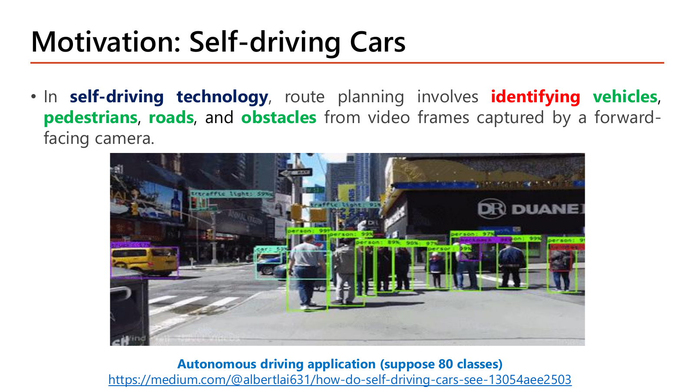
| ขั้น | ทำอะไร |
|---|---|
| Region proposal | เสนอ บริเวณที่น่าสนใจ แต่ละบริเวณมี objectness score บริเวณที่เกิน threshold ถูกส่งต่อ |
| Feature extraction และ network prediction | สกัด feature ภาพ และ ทำนาย สำหรับแต่ละบริเวณ ผลคือ หลายกรอบ ล้อมวัตถุเดียว |
| Non-maximum suppression | เหลือ 1 กรอบต่อ 1 วัตถุ |
คำถามของสไลด์: ถ้าทำระบบนับสุนัขจะเกิดอะไร คำตอบคือนับได้ 5 ทั้งที่มีตัวเดียว นี่คือเหตุที่ต้องมีขั้น NMS
อัลกอริทึม NMS: ทิ้งกรอบที่ต่ำกว่า confidence threshold → วนทีละ class: เลือกกรอบคะแนนสูงสุด → suppress กรอบที่ IoU กับกรอบนี้เกิน NMS threshold เช่น 0.5 → เลือกกรอบสูงสุดที่เหลือ ทำซ้ำจนหมด
NMS มีสอง threshold คนละจังหวะ: confidence threshold กรองก่อน loop · NMS threshold ที่เป็น IoU ใช้ใน loop · NMS ทำแยกต่อ class
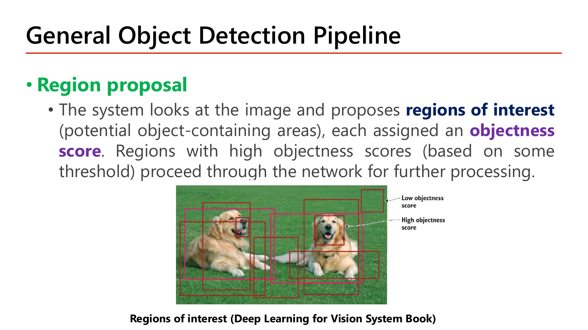
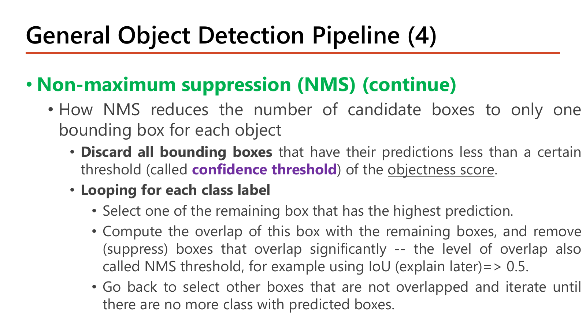
Evaluation metric ตัวแรกคือ IoU วัดการซ้อนกันของกรอบที่ทายกับ ground truth มีค่า 0 คือไม่ซ้อน ถึง 1 คือซ้อน 100%
พื้นที่ส่วนที่ซ้อนกัน หารด้วยพื้นที่รวมที่สองกรอบครอบ ส่วนซ้อนนับครั้งเดียว
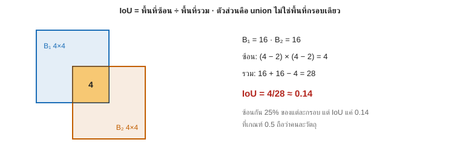
สองกรอบ 4×4 เหลื่อมกัน 2 หน่วยทั้งสองแกน ส่วนซ้อนคือ 2×2 = 4 union คือ 16 + 16 − 4 = 28 IoU จึงแค่ 0.14 แม้แต่ละกรอบซ้อนกันถึง 25%
Metric ต่อ: mAP คือ Mean Average Precision วัดผลรวม 0–100% · PR curve คำนวณต่อ class ได้จากการเปลี่ยน confidence threshold · AP คือพื้นที่ใต้ PR curve ต่อ class · mAP คือค่าเฉลี่ย AP ทุก class · FPS วัดความเร็ว
C คือจำนวน class เฉลี่ย AP ของทุก class
3 class AP = 0.80, 0.60, 0.70: mAP = 2.10/3 = 0.70 · การทายนับเป็น true positive เมื่อ class ถูกและ IoU กับ ground truth ถึงเกณฑ์
A = 8 · B = 8 · ซ้อน x 2 ถึง 4 y 0 ถึง 2 ได้ 4 · union 8 + 8 − 4 = 12 · IoU = 4/12 ≈ 0.33
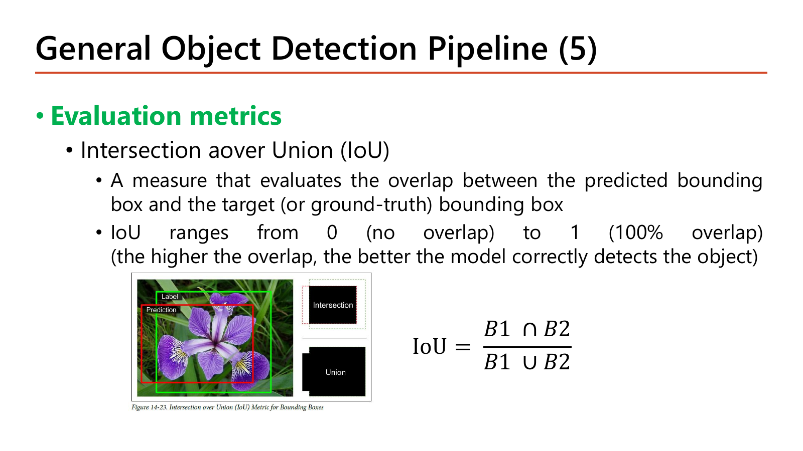
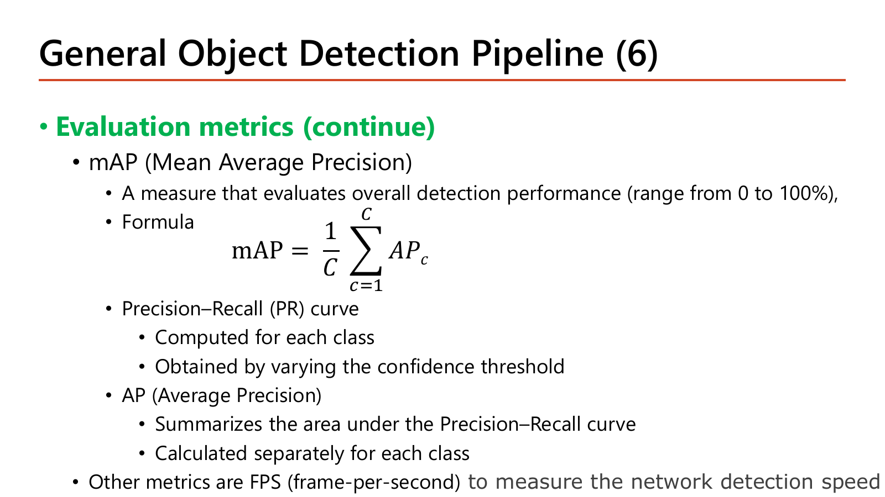
วิธีดั้งเดิมใช้ convnet ทำ sliding windows detection: เทรน classifier จากภาพที่ครอบพอดีว่าเป็นรถหรือไม่ แล้ว เลื่อน หน้าต่างทั่วภาพตาม stride และจำแนกทุกบริเวณ ข้อเสียคือแพงและช้าจนใช้ไม่ได้
ภาพ 416 หน้าต่าง 64 stride 8: ต่อด้าน ⌊(416 − 64)/8⌋ + 1 = 45 · รวม 45 × 45 = 2,025 หน้าต่าง ต้อง forward 2,025 ครั้งต่อภาพต่อขนาดหน้าต่าง ใกล้ ~2,000 region ของ R-CNN
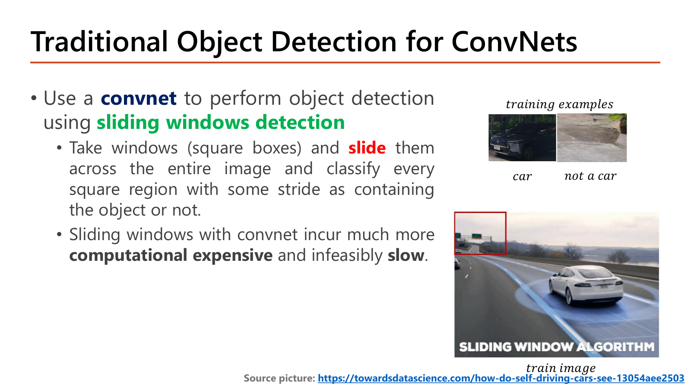
สามรุ่นหลักคือ R-CNN, Fast R-CNN และ Faster R-CNN สองรุ่นแรกใช้ อัลกอริทึม Selective Search ซึ่งไม่ใช่ neural network เสนอ ROI
| R-CNN | Fast R-CNN | Faster R-CNN | |
|---|---|---|---|
| mAP บน PASCAL VOC2007 | 66.0% | 66.9% | 66.9% |
| วิธี | selective search ~2,000 ROI แต่ละ ROI ผ่าน CNN แยก | ภาพผ่าน CNN ครั้งเดียว selective search บน feature map | แทน selective search ด้วย RPN end-to-end |
| ข้อจำกัด | ช้า ใช้สามโมเดล | selective search ยังช้า | proposal ยังใช้เวลา ทำงานเป็นทอด |
| เวลาต่อภาพ | 50 s | 2 s | 0.2 s |
| speed-up | 1x | 25x | 250x |
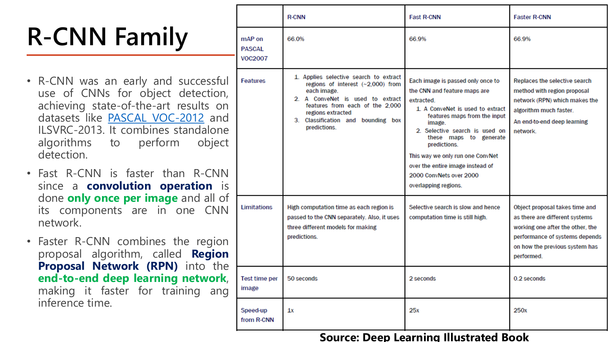
Fast R-CNN เร็วเพราะ convolution ทำ ครั้งเดียวต่อภาพ Faster R-CNN ใส่ Region Proposal Network เข้าใน network แบบ end-to-end ผลบน PASCAL VOC-2012 ตามตาราง mAP แทบไม่เปลี่ยน แต่เร็วขึ้น 50/0.2 = 250 เท่า 0.2 วินาทีคือ 5 FPS ยังไม่ real-time
R-CNN ทั้งตระกูล คำนวณแพง เพราะเป็น multi-stage detector เสนอ ROI ก่อนแล้วค่อยจำแนก One-stage detector ทายตำแหน่งและ class ตรงๆ ในครั้งเดียว ได้ real-time เช่น SSD, YOLO
Fast R-CNN ยังใช้ selective search · ตัวที่เลิกใช้คือ Faster R-CNN · R-CNN family ทั้งหมดเป็น multi-stage
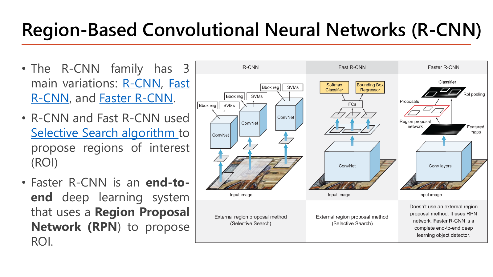
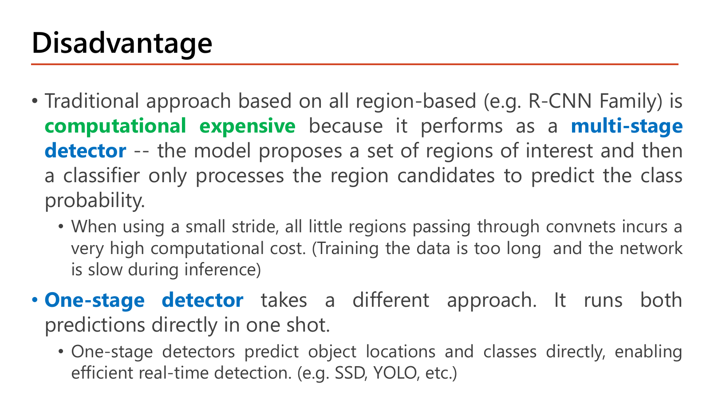
โมเดลตั้งต้นสำหรับภาพวัตถุเดียว: layer สุดท้ายให้ 8 ค่า p_c บอกวัตถุหรือ พื้นหลัง b_x คือ พิกัด X b_y คือ พิกัด Y b_h คือ ความสูง b_w คือ ความกว้าง และ c₁–c₃ คือ CAT, DOG, DUCK
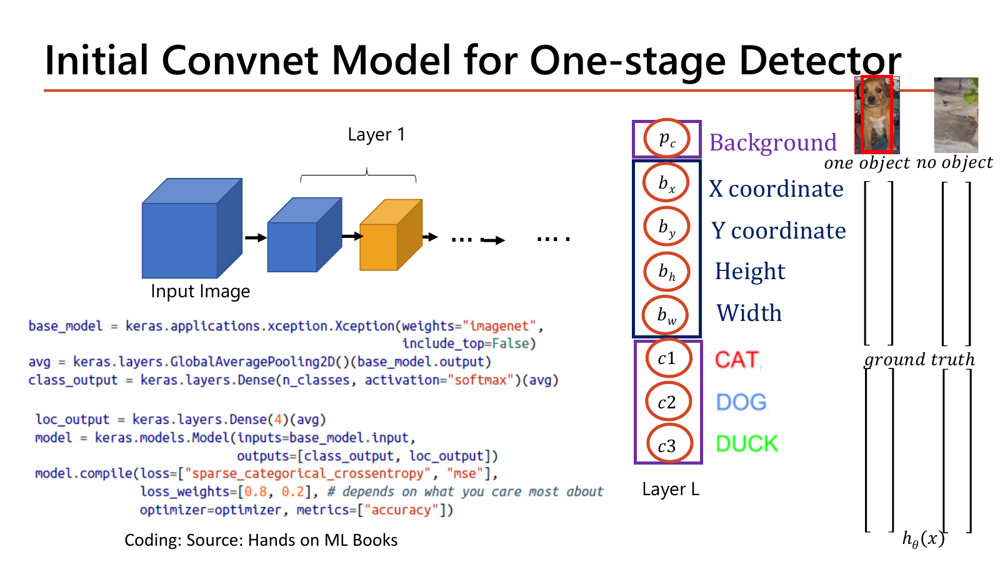
โค้ดจาก Hands-on ML ใช้ของที่เรียนมาครบ: transfer learning, GlobalAveragePooling และโมเดลสอง output ข้อจำกัดคือได้กรอบเดียวต่อภาพ
base_model = keras.applications.xception.Xception(weights="imagenet",
include_top=False)
avg = keras.layers.GlobalAveragePooling2D()(base_model.output)
class_output = keras.layers.Dense(n_classes, activation="softmax")(avg)
loc_output = keras.layers.Dense(4)(avg)
model = keras.models.Model(inputs=base_model.input,
outputs=[class_output, loc_output])
model.compile(loss=["sparse_categorical_crossentropy", "mse"],
loss_weights=[0.8, 0.2], # depends on what you care most about
optimizer=optimizer, metrics=["accuracy"])GlobalAveragePooling2D()(base_model.output) | เฉลี่ยแต่ละ channel เป็น 1 ค่า Xception ได้ 2,048 ค่า |
Dense(n_classes, activation="softmax") · Dense(4) | หัว class · หัวกรอบเป็น regression จึงไม่มี activation |
loss=["sparse_categorical_crossentropy", "mse"] | cross-entropy ให้ class · MSE ให้พิกัด |
loss_weights=[0.8, 0.2] | ให้ classification สำคัญกว่า "depends on what you care most about" |
Detection network ควรเป็น fully convolutional ไม่มี FC ท้าย ผลคือ เร็วกว่า เพราะมี แค่ convolution แทน FC ทั้งสามด้วย conv 3×3 200 filter → conv 1×1 200 filter → conv 1×1 4 filter ทุกตัว p = 0 s = 1
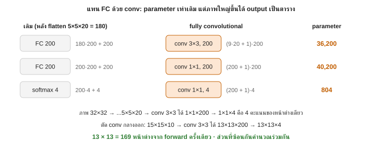
FC ชั้นแรกเท่ากับ conv ที่ kernel เท่าขนาด feature map ชั้นถัดไปเท่ากับ conv 1×1 parameter ตรงกันทุกชั้น ความต่างอยู่ที่ภาพใหญ่ขึ้น FC รับได้แค่ 180 ค่า แต่ conv เลื่อนไปได้ทั่ว feature map
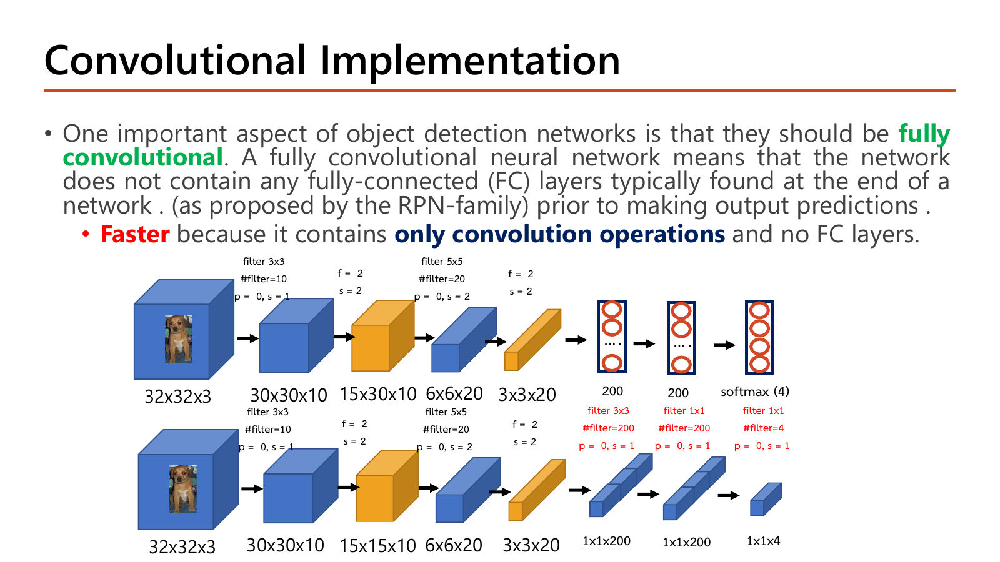
แถวบนของสไลด์หน้า 38 พิมพ์ขนาดหลัง pooling ว่า 15×30×10 ค่าถูกคือ 15×15×10 ตามแถวล่าง
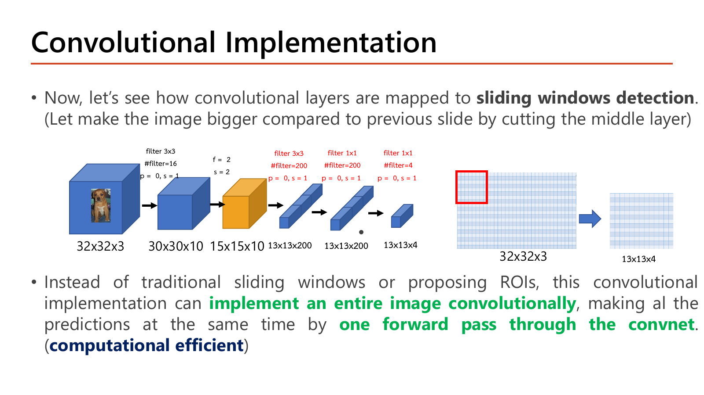
หน้า 39 ป้อน feature 15×15×10 ซึ่งใหญ่กว่าที่ classifier ออกแบบ ผ่าน สาม conv ชุดเดิม ได้ 13×13×4 แต่ละช่องคือผลของ classifier บนหน้าต่างหนึ่งตำแหน่ง ได้ 169 หน้าต่างจาก forward ครั้งเดียว สรุป: ทำทั้งภาพแบบ convolution ด้วย forward ผ่าน convnet ครั้งเดียว จึง คำนวณได้มีประสิทธิภาพ
FC: 500·100 + 100 = 50,100 · conv: (5·5·20 + 1)·100 = 50,100 เท่ากัน output conv คือ 1×1×100
แบ่งภาพเป็นตาราง ให้นักเรียนหนึ่งคนประจำหนึ่งช่อง ถ้าจุดกลางของวัตถุตกในช่องไหน คนประจำช่องนั้นต้องรายงานว่ามีอะไร อยู่ตรงไหน ขนาดเท่าไร ทุกคนรายงานพร้อมกันในรอบเดียว
YOLO เป็น one-stage detector ที่ เร็ว และ แม่น แบ่งภาพเป็น grid แล้วรัน อัลกอริทึม แบบ convolution บน ทุกช่อง ตอน test มองครั้งเดียว ต่างจาก sliding windows ที่กรอบขนาดตายตัว YOLO ทาย b_x, b_y, b_h, b_w เป็นตัวเลข กรอบจึงขนาดใดก็ได้
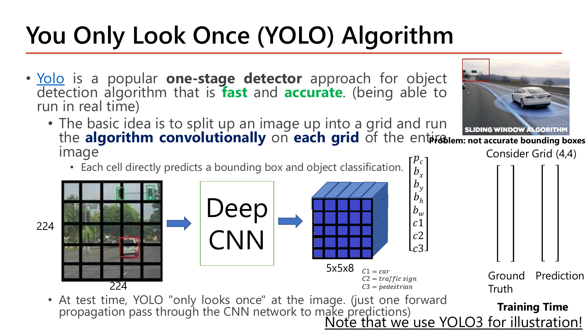
ตัวอย่างบนสไลด์ grid 5×5 3 class คือ car, traffic sign, pedestrian แต่ละ cell มี 8 ค่า รวม 5 × 5 × 8 = 200 ค่า ground truth ตอนเทรนมี shape เดียวกัน
ถ้า จุดกลางของกรอบ ground truth ตกใน cell ไหน cell นั้น รับผิดชอบ ตรวจว่ามีวัตถุนั้น แต่ละ cell ทาย B กรอบ แต่ละกรอบมี objectness และความน่าจะเป็นของ K class
สไลด์เขียน S·S·(5+K)·B คือจำนวนช่อง × ค่าต่อกรอบ × กรอบต่อช่อง
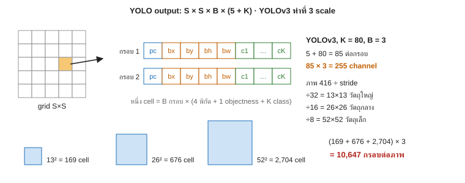
cell สีเหลืองหนึ่งช่องเก็บ B กรอบ แต่ละกรอบ 5 + K ค่า YOLOv3 มี K = 80 B = 3 จึงได้ 255 channel และทำที่ grid สามขนาด
S = 13, K = 80, B = 3: ต่อกรอบ 85 · ต่อ cell 255 · ทั้งภาพ 13 × 13 × 255 = 43,095 ค่า · 507 กรอบ · ตัวอย่างหน้า 40: 5 × 5 × (5 + 3) × 1 = 200
K คือจำนวน class ไม่ใช่จำนวน anchor · ต่อกรอบมี 5 + K ไม่ใช่ 4 + K
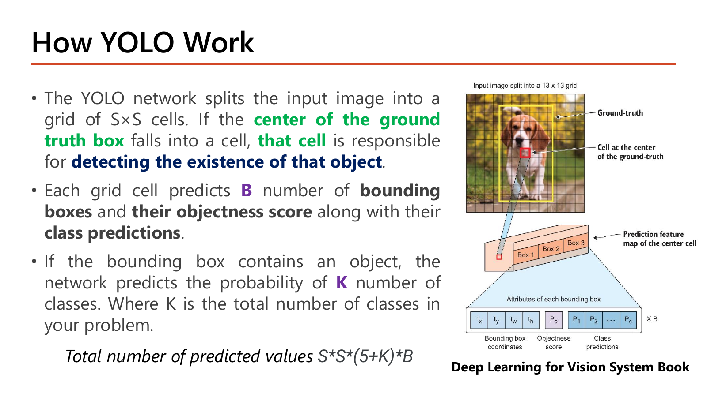
ถ้า cell ทายได้กรอบเดียว รถกับคนที่จุดกลางตก cell เดียวกันจะถูกตรวจชิ้นเดียว anchor box คือ กรอบรูปทรงกำหนดไว้ก่อน ช่วย จับสัดส่วนและขนาดของวัตถุ ใน cell จับคู่ n การทายกับ n anchor วัตถุถูกกำหนดให้ cell ที่มีจุดกลาง และ anchor ที่ IoU กับ ground truth สูงสุด
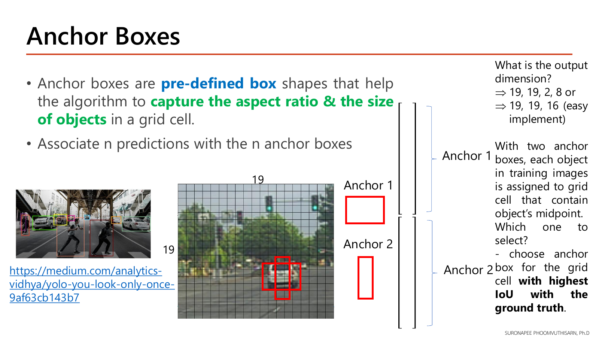
คำถามบนสไลด์ "What is the output dimension?" grid 19×19 สอง anchor 3 class ตอบได้ 19, 19, 2, 8 หรือ 19, 19, 16 ซึ่ง implement ง่ายกว่า รวม 19 × 19 × 16 = 5,776 ค่าเท่ากัน
แต่ละกรอบมี objectness score บอกว่าโมเดลมั่นใจแค่ไหนว่ากรอบมีวัตถุ ตอน post-processing รวมกับ class score ได้ confidence score ต่อ class ใช้กรองและเรียงใน NMS
สไลด์เขียน confident score = P(มีวัตถุ) × class score
p_c = 0.9 class score car 0.8 pedestrian 0.1: car = 0.72 · pedestrian = 0.09 · p_c ต่ำทำให้ confidence ต่ำทุก class แม้ class score สูง
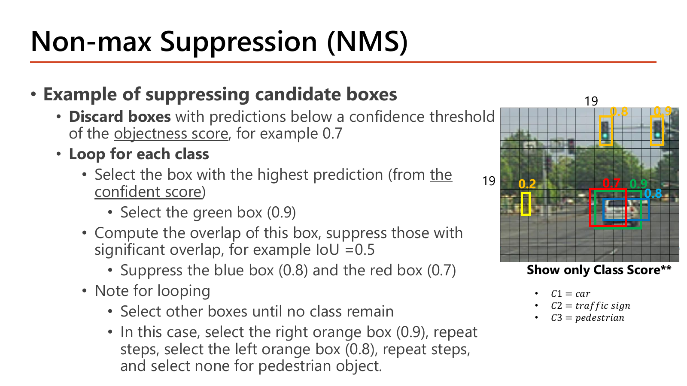
ตัวอย่างนี้มีไว้ให้เห็นว่า NMS ตัดสินจากการซ้อนทับและทำแยกต่อ class ไม่ใช่ตัดตามคะแนน
| ขั้น | ผล |
|---|---|
| ทิ้งกรอบต่ำกว่า confidence threshold 0.7 | pedestrian 0.2 ถูกทิ้ง กรอบ 0.7 ไม่ต่ำกว่า threshold ยังอยู่ |
| car: เลือกสูงสุด | กรอบเขียว 0.9 |
| car: suppress IoU ≥ 0.5 | กรอบ 0.8 และ 0.7 ที่ซ้อนกรอบเขียวถูกทิ้ง |
| traffic sign | เก็บทั้ง 0.9 และ 0.8 เพราะอยู่คนละที่ IoU = 0 · คะแนนบนภาพคือ 0.8 0.9 0.2 |
| ผลสุดท้าย | 3 กรอบ: car 0.9, traffic sign 0.9, traffic sign 0.8 |
กรอบ 0.8 ของ car ถูกทิ้งแต่ 0.8 ของ traffic sign ถูกเก็บ · กรอบต่าง class ที่ซ้อนกันไม่ suppress กัน
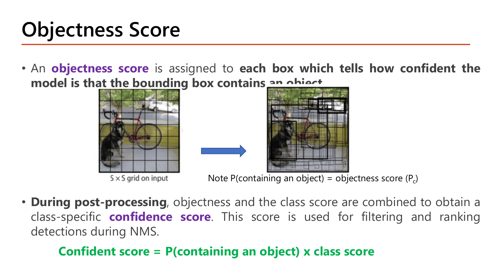
วัตถุมี ขนาดต่างกัน cell เล็กเห็นแค่ขนของม้าตัวใหญ่ แต่พอดีกับม้าตัวเล็ก YOLO แก้ด้วย ใช้ conv layer หลายขนาด คือ stride ต่างกันใน network เดียว
CNN ลดขนาดเชิงพื้นที่ทีละขั้น feature map ความละเอียดต่ำตรวจวัตถุใหญ่ YOLOv3 มี 9 anchor สำหรับ 3 scale ตรวจที่ stride 32, 16, 8 ภาพ 416 ได้ 13×13, 26×26, 52×52 สำหรับวัตถุ ใหญ่ กลาง และเล็ก
416/32 = 13 · 416/16 = 26 · 416/8 = 52 · cell 169 + 676 + 2,704 = 3,549 · คูณ 3 anchor ได้ 10,647 กรอบต่อภาพ กรอบละ 85 ค่า · NMS ลดเหลือไม่กี่กรอบ
backbone ของ YOLOv3 ชื่อ Darknet-53 ได้แรงบันดาลใจจาก Inception คือผสม conv 1×1 และ 3×3 และจาก ResNet คือ skip connection เพิ่มอีก 53 layer สำหรับ detection รวม 106 layer แบบ fully convolutional ลึกจึงช้ากว่า YOLOv2 แต่แม่นขึ้นมาก
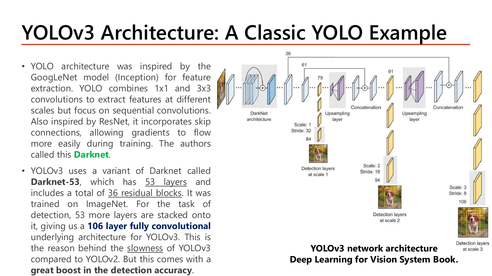
แผนภาพมีจุดตรวจสามจุดที่ layer 84, 94 และ 106 ตาม stride 32, 16, 8 ระหว่าง scale มี upsampling แล้ว concatenate กับ feature map ละเอียดกว่าจาก layer 61 และ 36 แหล่งอื่นหลายแห่งนับจุดแรกเป็น layer 82 ถ้าข้อสอบถามให้ยึดตัวเลขบนสไลด์
สรุป YOLOv3 ปี 2018 รุ่นสุดท้ายที่ Joseph Redmon ร่วมทำ: input (m, 416, 416, 3) → DEEP CNN → encoding (m, 13, 13, 255), (m, 26, 26, 255), (m, 52, 52, 255) · output ต่อกรอบ 6 ตัวเลข (p_c, b_x, b_y, b_h, b_w, c) หรือ 85 ถ้าขยาย c เป็น 80 · YOLO ไม่ทายกรอบตรงๆ แต่ ทายเป็นระยะเลื่อนจาก anchor · คัดกรอบด้วย NMS · กรอบแม่นกว่า YOLOv2 แต่ใช้ทรัพยากรมากกว่า
ผลพิมพ์หนึ่งบรรทัดต่อกรอบที่ผ่าน NMS: มุมสองมุม class และ confidence ทุกกรอบเป็น person 0.910, 0.973, 0.904, 0.920 กรอบสูงราวสองเท่าของกว้างตามรูปคนยืน และเล็กกว่า 100 × 170 pixel บนภาพกว้างเกิน 2,500 pixel คนเล็กแบบนี้ถูกจับด้วย grid ละเอียด stride 8
stride ใหญ่ = grid หยาบ = วัตถุใหญ่ · 13×13 ตรวจวัตถุใหญ่ ไม่ใช่เล็ก
608/32 = 19 · 608/16 = 38 · 608/8 = 76 · cell 361 + 1,444 + 5,776 = 7,581 · คูณ 3 ได้ 22,743 กรอบ
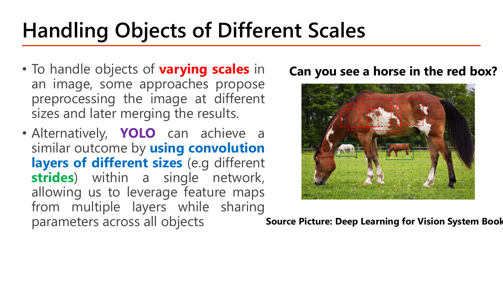
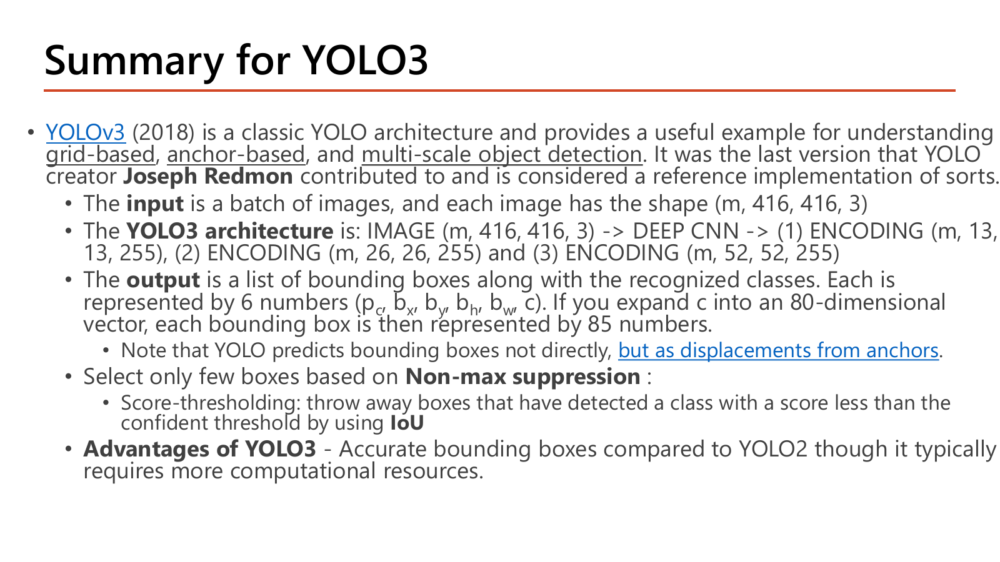
| คงอยู่ | เปลี่ยนไป |
|---|---|
| one-stage ทายวัตถุตรงจาก feature | backbone และการสกัด feature ดีขึ้น |
| ทายกรอบ + class | รวม feature หลายขนาดดีขึ้น |
| ใช้ feature หลายขนาด | การทายกรอบและ loss ดีขึ้น |
| ออกแบบเพื่อ real-time | บางรุ่น anchor-free · trade-off ความแม่น ความเร็ว ขนาด ดีขึ้น |
โจทย์พื้นฐานยังเดิมสามข้อ: Where is the object? What is it? How confident are we? ตรงกับกรอบ class และ p_c
| ส่วน | หน้าที่ | เทียบ YOLOv3 |
|---|---|---|
| Backbone | สกัด feature หลายความละเอียด | Darknet-53 |
| Neck | รวม feature ต่างความละเอียด FPN จากลึกไปละเอียด PAN จากละเอียดไปลึก รวม WHAT กับ WHERE | upsampling + concatenation |
| Detection Head | ทายกรอบและ class บางรุ่นไม่มี anchor | detection 3 scale แบบมี anchor |
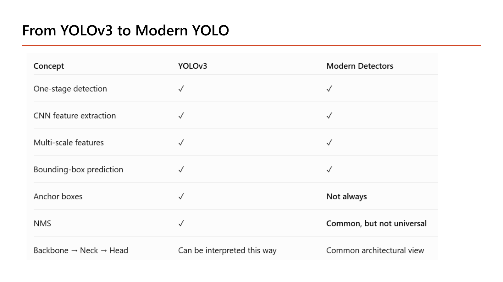
สี่แถวแรกของตารางเหมือนกันทั้งสองฝั่ง ความต่างคือ anchor box ที่รุ่นใหม่ใช้ "Not always" และ NMS ที่ "Common, but not universal"
Transformer ใช้ทำ detection ได้ เช่น DETR ปี 2020: มองเป็น set prediction ทายเซตวัตถุครั้งเดียว · ใช้ object query หนึ่ง query ต่อวัตถุหนึ่งชิ้น · ทาย class + กรอบ · ใช้ attention จับความสัมพันธ์ทั้งภาพ · DETR ดั้งเดิมไม่ต้องมี anchor และ NMS CNN-based detector ยังสำคัญมากเมื่อต้องการความเร็ว Transformer เป็นอีกทาง ไม่ได้มาแทน รุ่นต่อมาคือ RT-DETR สำหรับ real-time
DETR ไม่ต้องใช้ NMS เพราะแต่ละ query จับคู่วัตถุไม่ซ้ำกัน · Transformer ไม่ได้แทน CNN detector ทั้งหมด
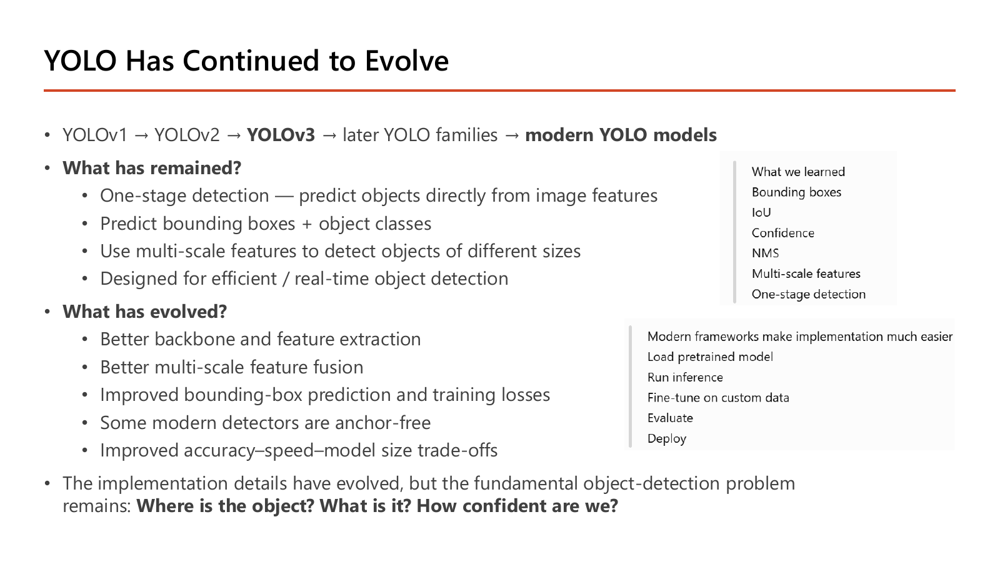
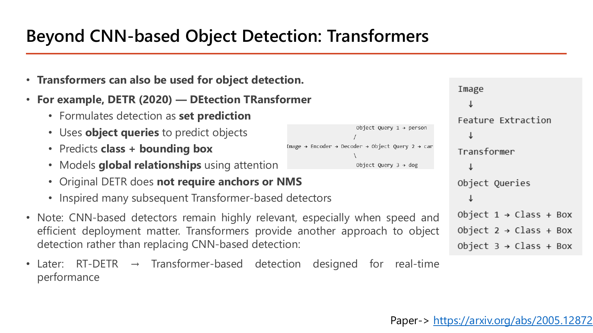
ลองฝึกต่อในแบบฝึก Lesson 9 หรืออ่านต่อ Lesson 10 — Sequence Models และ RNN
| หน้า | เนื้อหา | อยู่ในตอน |
|---|---|---|
| 1–7 | Functional API, multi-input, graph models, wide & deep, re-use layers | ตอน 1 |
| 8–11 | Multi-output, auxiliary output, compile/fit, housing price | ตอน 2 |
| 12–22 | Visualizing activations, filters, Grad-CAM | ตอน 3 |
| 23–32 | Object detection, pipeline, NMS, IoU, mAP | ตอน 4 |
| 33–39 | Sliding windows, R-CNN family, one-stage, convolutional implementation | ตอน 5 |
| 40–53 | YOLO, anchor, objectness, NMS, multi-scale, YOLOv3, modern detectors, DETR | ตอน 6 |
ตัวเลข parameter, IoU, Grad-CAM และขนาด output ของ YOLO คำนวณซ้ำด้วย Python แล้ว สไลด์พิมพ์ผิดหน้า 38 คือ 15×30×10